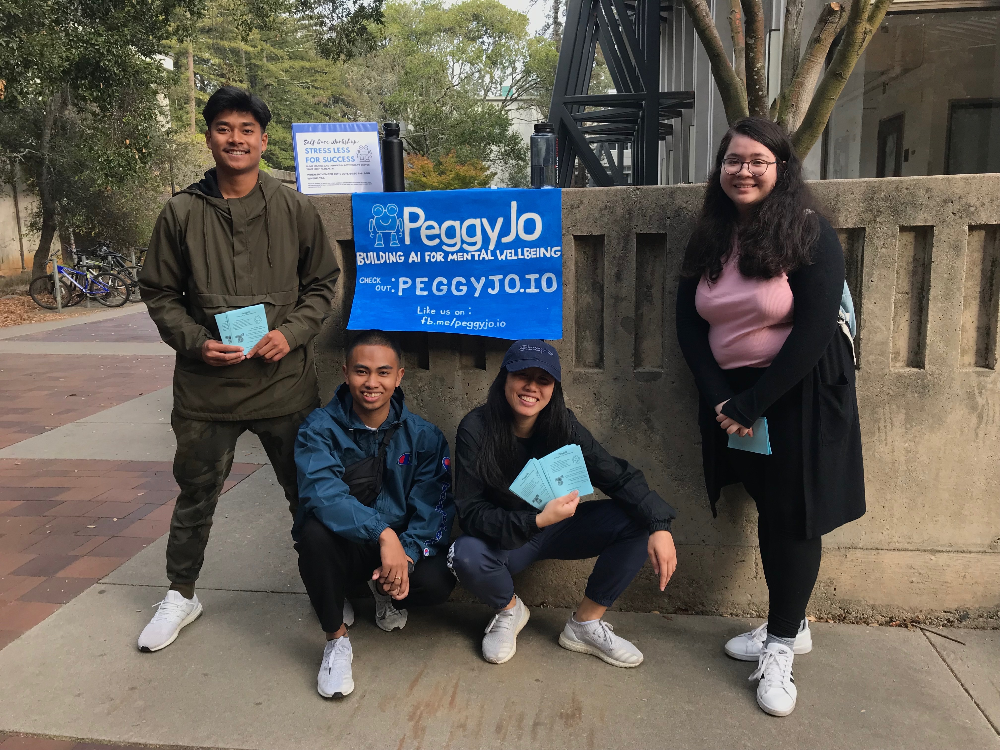
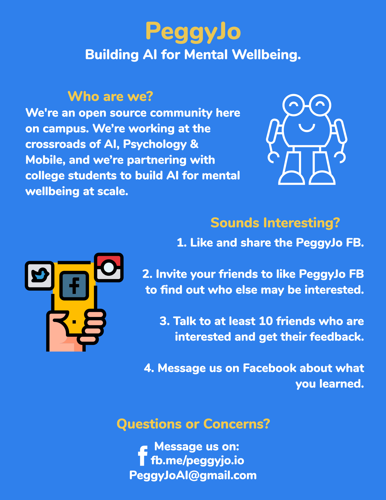
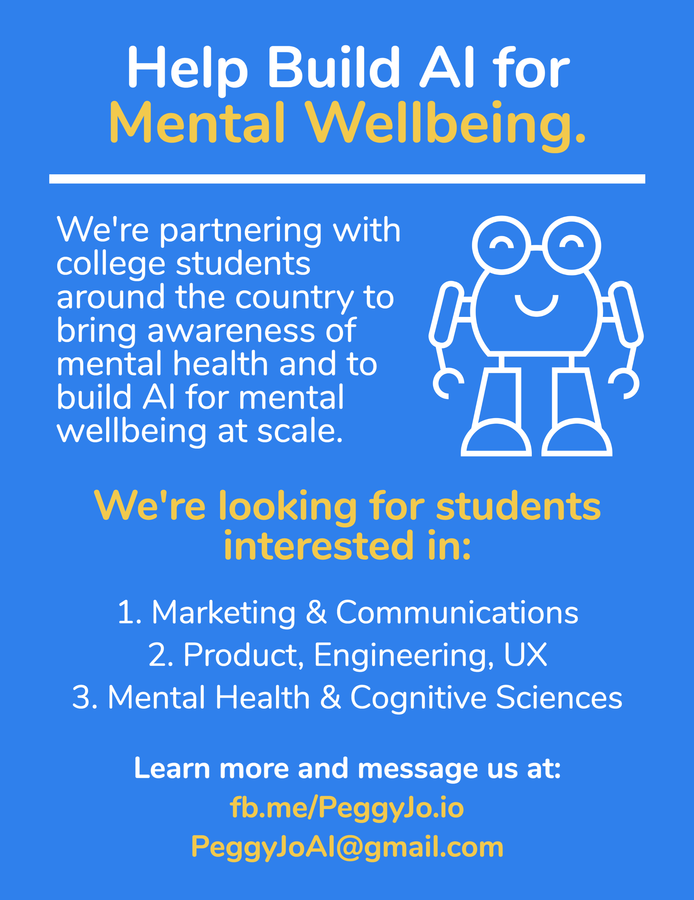
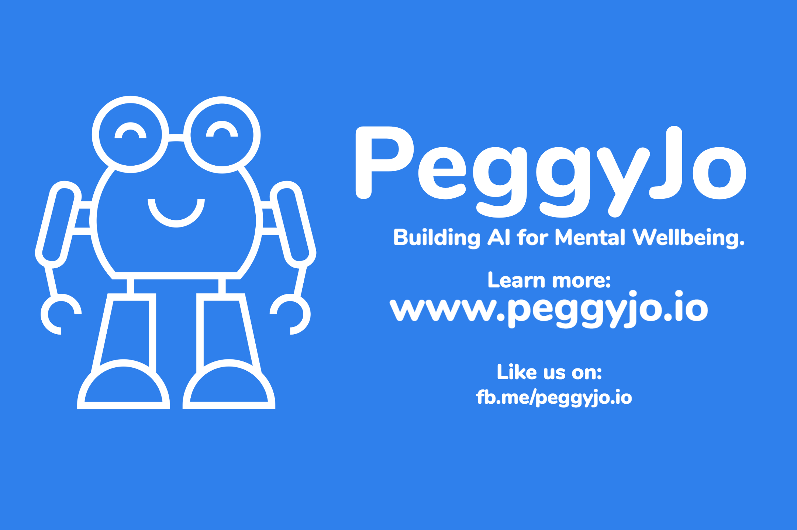
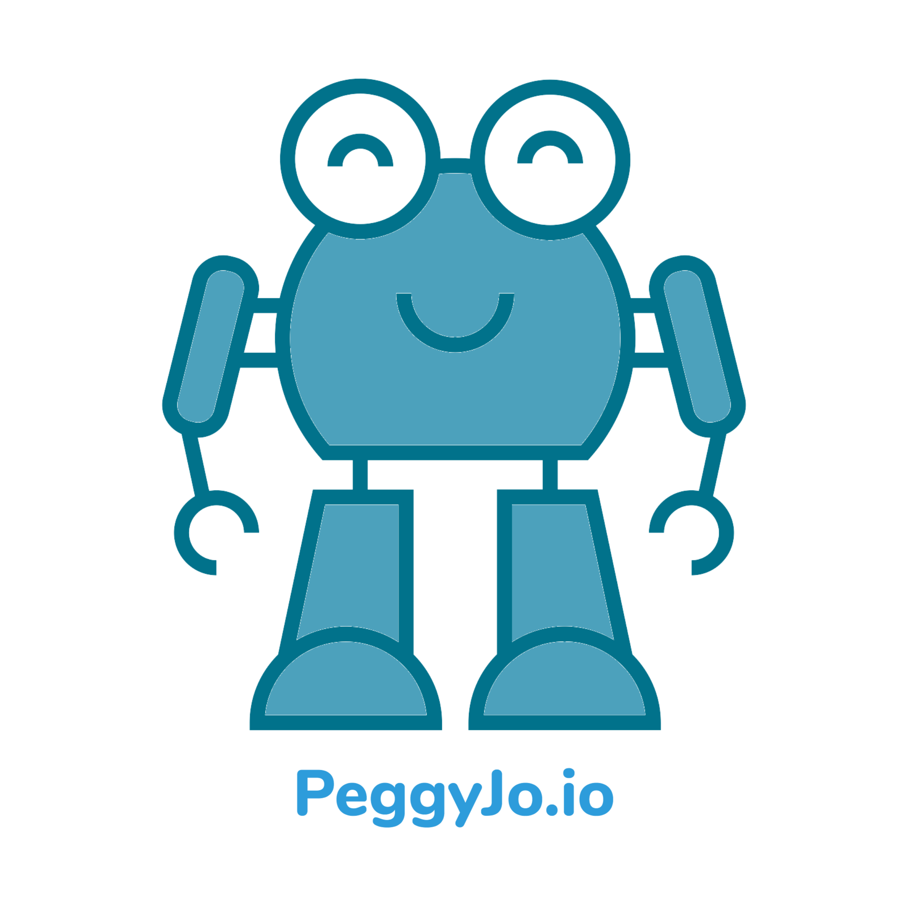
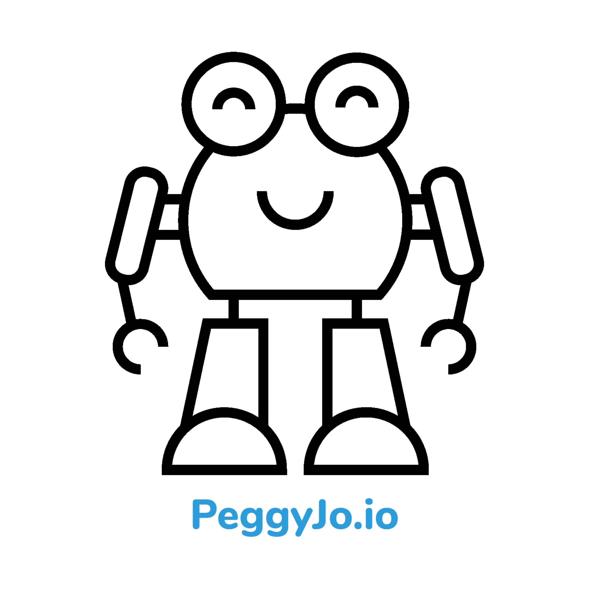
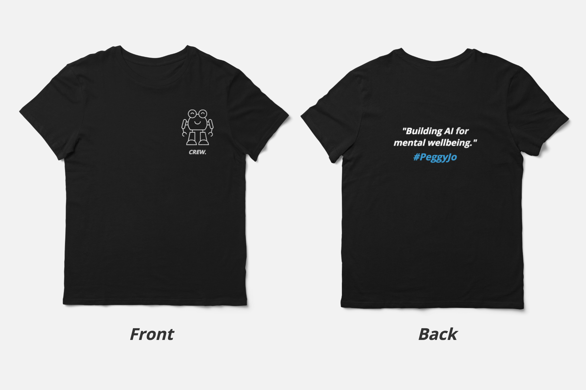
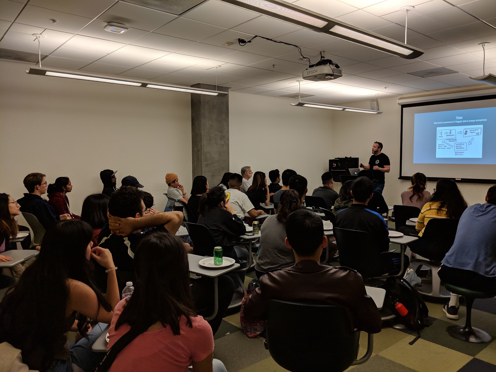
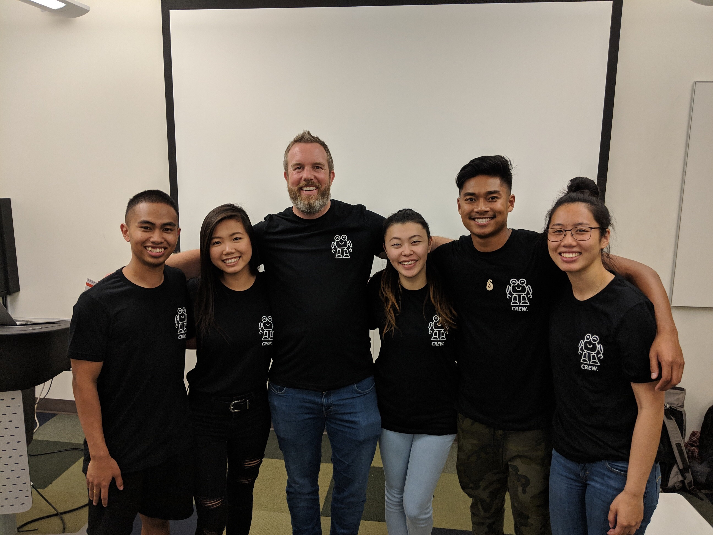

Mental health is on the decline and technology is making it worse. There is a gap in the market for bringing transparency to the impact digital content has on our lives.
The Vision
Design an AI focused on understanding your mental wellbeing. This is of course a lofty goal, and we must take things one step at a time. To start, we would need to develop an experience that is not only useful to thousands of people around the world, but simple to use.
My Role
I assisted in cross functional teams by applying tactical communication and marketing strategies throughout social media in order to increase engagement and user base of our product as well as defined and created the visual and strategic elements that comprise PeggyJo’s brand and product identities. The business result was creating delightful intuitive experiences that defined the future of PeggyJo’s brand, resulting in over 250+ supporters.

Advocating mental health @ UC Santa Cruz.
Flyers
Flyers are a great way to market. Flyers are extremely cost effective and have an incredibly high return on investment. Below are some flyers I designed based on the insights we gained through our initial research. We found in-person distribution most effective in large populated areas around college campuses.

General Outreach Flyer

Technical Outreach Flyer
Posters
Posters are also a great tool to think about early in the marketing process. A poster includes a visual design, images, colors and copy. It provides a message intended to promote brand awareness or call attention to a company event. Below is one of the posters I designed based on particular business needs.

Stickers
Stickers are a cheap and cost-effective way to promote a brand. Stickers are eye-catching and more importantly customizable. Below are some of my initial sticker designs.


Shirts
Shirts! Every time one of our community members wear our company printed t-shirts, they will be contributing positively to improved brand recognition and our mission. PeggyJo will be marketed anywhere that the particular wearer of our t-shirt goes.

#PeggyJo Shirt Designs
Events
A key reason for any startup business to host numerous events is to establish and build its brand. Moreover, at PeggyJo we were looking to build a community of supporters. Through hosting our own events, we gained a venue to share our own ideas, product, and brand in the exact way we wanted to present them.

Building AI for Mental Health @ UC Santa Cruz.

PeggyJo @ UC Santa Cruz.
Takeaways
It’s really hard to produce great content, let alone a lot of it. Utilize your team, there are people in other disciplines that are perhaps also interested in making content, so give them an opportunity to support your content marketing efforts. Size doesn’t matter, engagement does. Content should be optimized for quality of engagement, not quantity.Utilize a human-centered approach in regards to marketing. A human-centered design approach to marketing helped fuel our opportunities to connect more deeply with our audience.